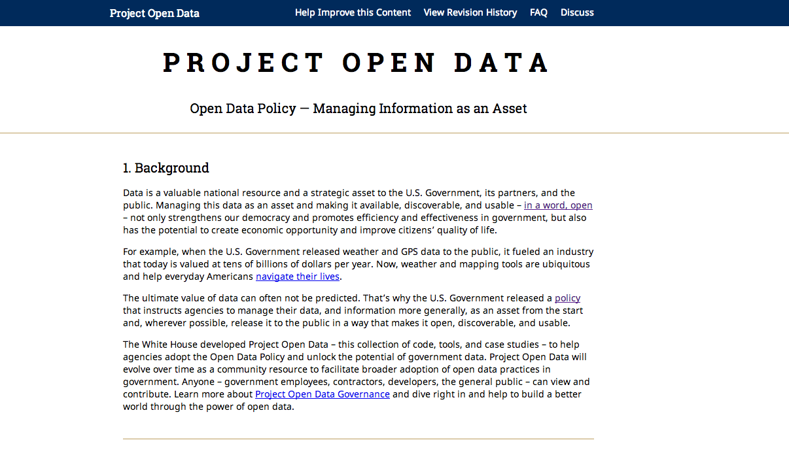

Project Open Data
Metadata v 1.1 Updates
Phil Ashlock & Rebecca Williams, Data.gov

- The Project Open Data metadata schema is required under the Open Data Policy (OMB M-13-13) and powers Data.gov
- Learn more at Project Open Data.
Metadata Schema v1.1 Updates
Today we will discuss:
- Why update the Project Open Data metadata schema?
- Tentative Timeline for implementing the new schema
- Detailed explanation of updates
- Resources, Tools, and Support
Why update the schema?
- To better align with DCAT
- Reduce confusion and ambiguity
- Provide more detailed usage notes
- Options for advanced users
- All of these changes were informed by your feedback online and through the July government-wide offsite session.
Tentative Timeline
- Propose that agencies begin using new schema - December 1, 2014
- Agencies should have migrated to new schema - Feb 1, 2015
Data Catalog Fields
- Adds required 'conformsTo' field to specify the schema version
- Adds required 'dataset' field as a container for all datasets listed
- Adds optional 'describedBy' field to specify a canonical or customized JSON schema file describedBy
- Preview of the new updated metadata schema page.
Dataset Required Field Changes
- Changes 'contactPoint' field to an object that contains the name ('fn') and email address ('hasEmail'):
- Adds required 'fn' field as part of 'contactPoint' replacing earlier use of 'contactPoint'
- Renames required 'mbox' field to 'hasEmail' and moves to within 'contactPoint'
-
Changes required 'publisher' field to an object that allows multiple levels of organizations:
- Adds required 'name' as part of 'publisher' replacing earlier use of publisher
- Adds optional 'subOrganizationOf' field as part of 'publisher' to include parent organization hierarchy
- Preview of the new updated metadata schema page.
Dataset Required-if-Applicable Field Changes
- Removes 'webService' field. APIs can be described within a 'distribution' using 'accessURL' and 'format'
- Renames 'accessLevelComment' field to 'rights'
- Changes 'license' field to be a URL
- Changes 'distribution' field to become required-if-applicable and to always contain the 'accessURL' or 'downloadURL' fields
- Preview of the new updated metadata schema page.
New Distribution Fields
- Adds required-if-applicable 'downloadURL' field to replace earlier use of 'accessURL'
- Adds required-if-applicable 'mediaType' field to replace earlier use of 'format'
- Changes 'accessURL' field to represent indirect access and to exist only as an optional field
- Changes 'format' field to a human readable description and to exist only as an optional field
- Adds optional 'description' field
- Adds optional 'describedBy' field
- Adds optional 'describedByType' field
- Adds optional 'conformsTo' field
- Preview of the new updated metadata schema page.
Expanded Field Changes
- Changes 'accrualPeriodicity; field to use ISO 8601 date syntax (#292)
- Renames 'PrimaryITInvestmentUII' field to 'primaryITInvestmentUII'
- Renames 'dataDictionary' field to 'describedBy'
- Adds 'conformsTo' (optional)
- Adds 'isPartOf' (optional)
- Preview of the new updated metadata schema page.
People to help you
- Schedule a time to meet with us
- Let's walk through the process
- Look at your metadata
Project Open Data
Metadata v 1.1 Updates Q & A
Phil Ashlock & Rebecca Williams, Data.gov
/